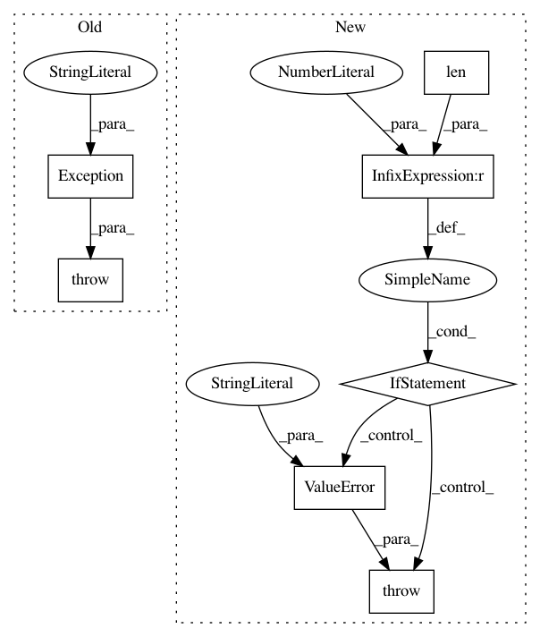

4fb3f1b3f384c3a05306b37ea9a736144ed6394a,keras/backend/tensorflow_backend.py,,rnn,#Any#Any#Any#Any#Any#Any#Any#Any#,1050
Before Change
states = initial_states
nb_states = len(states)
if nb_states == 0:
raise Exception("No initial states provided.")
elif nb_states == 1:
state = states[0]
else:
state = tf.concat(1, states)
After Change
state = tf.concat(1, states)
if mask is not None:
if len(initial_states) == 0:
raise ValueError("No initial states provided! "
"When using masking in an RNN, you should "
"provide initial states "
"(and your step function should return "
"as its first state at time `t` "
"the output at time `t-1`).")
if go_backwards:
mask = tf.reverse(mask, [True] + [False] * (ndim - 2))
// Transpose not supported by bool tensor types, hence round-trip to uint8.
In pattern: SUPERPATTERN
Frequency: 3
Non-data size: 7
Instances
Project Name: keras-team/keras
Commit Name: 4fb3f1b3f384c3a05306b37ea9a736144ed6394a
Time: 2016-09-16
Author: francois.chollet@gmail.com
File Name: keras/backend/tensorflow_backend.py
Class Name:
Method Name: rnn
Project Name: interactiveaudiolab/nussl
Commit Name: d5f74cc30a8f0a192d5ef8818c6d72c3707c4a97
Time: 2017-02-04
Author: ethanmanilow@gmail.com
File Name: nussl/audio_signal.py
Class Name: AudioSignal
Method Name: __init__
Project Name: interactiveaudiolab/nussl
Commit Name: efc54499191ead69f875877badd3578c60eba7a6
Time: 2017-02-08
Author: ethanmanilow@gmail.com
File Name: nussl/audio_signal.py
Class Name: AudioSignal
Method Name: __init__